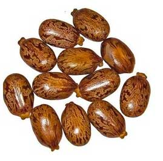

Castor oil $12.00 Benefits: 1. Locks in moisture externally (must be used after penetrative oil is applied) 2. Attracts moisture from the environment. Castor oil is a humectant; it attracts water molecules from air further moisturizing the hair 3. Adds luster and shine to hair 4. Reduces frizz Note: For maximum benefits, mix castor oil with another oil. |